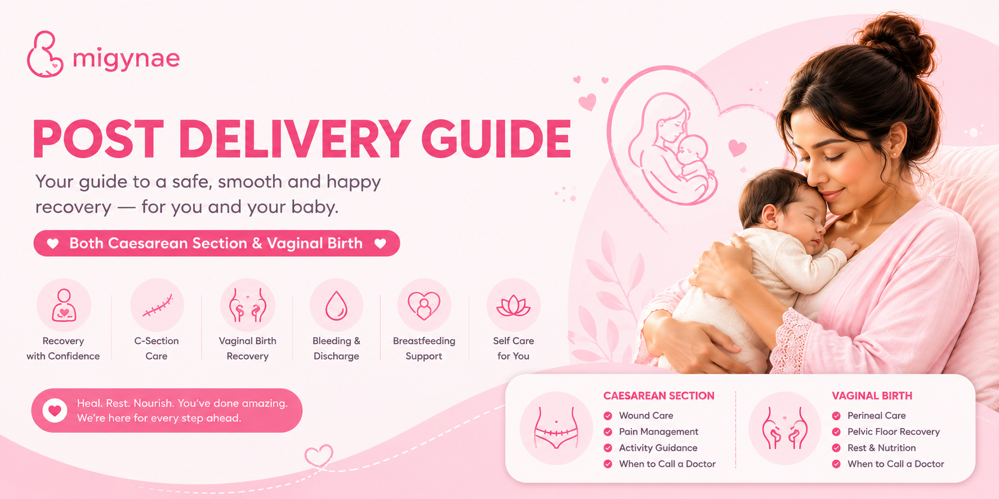

Labour Prep Guide
Prepare for normal delivery with OBGYN-backed tips on breathing techniques, labour positions, hospital bag checklist, pain management options, and birth partner support. Includes when to go to the hospital and realistic expectations for first-time mothers.
Read full labour guide →
Postpartum Recovery Guide
Heal after delivery with expert guidance on wound care (C-section & vaginal), safe postpartum exercises, breastfeeding tips, nutrition for recovery, mental health support, and warning signs that need immediate medical attention.
Read full recovery guide →Short, Shareable Reads
Bite-size, doctor-backed guides for labour, birth, recovery, and the people supporting her — quick to read and easy to share.
Pre-Labour Prep
Stay active, know when to step it up from 28 weeks, questions for your doctor, and hospital warning signs.
Read guideDuring Labour
Breathing, positions, when not to push, resting between contractions, and asking for pain relief.
Read guideThe Epidural, Explained
What it is, what to expect, myths vs facts, and the right questions to ask your anaesthetist.
Read guideYour Caesarean Guide
The essentials of a C-section (LSCS), recovering well, warning signs, and reassurance it's still your birth.
Read guidePost-Delivery Recovery
What's normal and what's not, warning signs, and simple do's and don'ts after birth.
Read guideFor the Partner
How to support her through pregnancy, in the labour room, and after the baby comes.
Read guideFor the Family
How to understand and support her through pregnancy and after the baby arrives.
Read guideHow These Guides Work With the App
Read on the website
Full guides are free, long-form, and printable — no app login required.
Track in the app
Use MiGynae's contraction timer during labour and daily recovery tips postpartum.
Download the app for daily pregnancy support